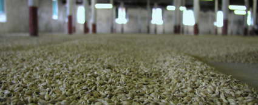
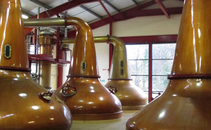

Intro
Just three basic ingredients are needed - water, barley and yeast. Technology now aids production,
but traditionally there are five stages to the process - malting, mashing, fermentation, distillation and maturation.
Here we go through and explain each of these important stages.
Step 1 - Malting
Barley contains starch and it is this starch which needs to be converted into
soluble sugars to make alcohol. For this to occur, the barley must undergo germination and this first part of
the prodess is called 'malting'. Each distiller has their own preference about the type of barley they buy,
but they need a type that produce high yields of soluble sugar. The barley is soaked for 2-3 days in warm
water and then traditionally spread on the floor of a building called a malting house. It is turned regularly
to maintain a constant temperature. This is also carried out on a commercial scale in large drums which rotate.

Step 2 - Mashing
The ground down malt, which is called 'grist', is now added to warm water to begin
the extraction of the soluble sugars. The water is normally from a pure, reliable,
local source - this is why most distilleries around the world are next to a river or lake.
The character of this water can influence the final spirit as it can contain minerals from passing over or
though granite, peat or other rock. The liquid combination of malt and water is called the 'mash'.
It is put into a large vessel called a mash tun and stirred for several hours.

Step 3 - Fermentation
The wort is cooled and passed into large tanks called washbacks.
These are traditionally made of wood, but now a number of distilleries use stainless steel.
Here the yeast is added and the fermentation begins. The yeast turns the sugars that are present into alcohol.
As with the barley and water, the distiller will carefully select the strain of yeast that they use and it
can also have a small effect on the final flavour of the spirit. The fermentation normally takes around 48
hours to run its natural course, although some distilleries will let it go for longer so as to create further
characteristics that they require. The liquid at this stage is called 'wash' and is low in alcohol strength
(between 5-10% ABV), like beer or ale. You could make beer from the liquid at this point, but the difference
with whisky is that the liquid is now distilled rather than brewed.
Step 4 - Distillation
In Scotland, the wash is traditionally distilled twice. In Ireland, it is distilled three times although there are exceptions
in both countries. Here is a brief explanation of the double distillation process. The stills are made from copper, which
has been found to be the best material for extracting impurities from the spirit as it is being distilled, and consist of a
bowl shape at the bottom that rises up to the neck at the top. All are the same in principal, but a different shape will
give a different flavour and character to the final spirit. Taller stills with longer necks will give finer, lighter spirits
while shorter, fatter stills will produce a fuller, richer spirit.

Step 5 - Maturation
The spirit is put into oak casks and stored. The most common types of oak casks are those that have previously
been used in the American bourbon and Spanish sherry industries. The spirit must mature in casks for a minimum of
three years before it is legally allowed to be called whisky in Scotland. During maturation, the flavours of the
spirit combine with natural compounds in the wood cask and this gives the whisky its own characteristic flavour and aroma.